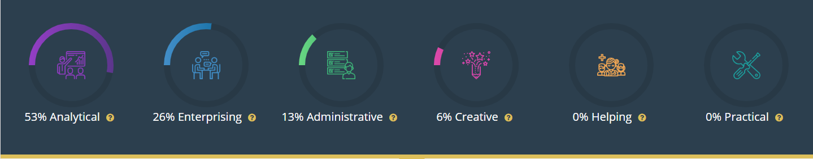

As I started researching some career ideas near the end of Year 9, in this section I will describe the career that I have decided on and investigate its requirements.
My first idea was that I wanted to pursue my love of coding, so I went to Adelaide Uni's Degree Finder (and UniSA's, but I ended up deciding on Adelaide Uni) and found this Software Engineering degree that I liked the sound of.
Because I am aiming to get into that degree is, in part, why I decided to present my PLP as a HTML website rather than a Google Site. It is helping me practise my coding skills.
From looking at the requirements for that degree, I worked backwards into Year 12 subjects, and found that I would have to do Year 12 Mathematical Methods and 12 Physics (both SACE).
As I am doing Year 12 Maths Methods this year, I only needed to figure out my path for Physics.
To get into 12 Physics you need a B or better in 11 Physics 1 & 2, and to get into that you need a C or better in both 10 Pre-Senior Science (which is covered by IGNITE) and Specialist Physics (which I am doing next semester).
That is why I chose those courses when I was selecting subjects back at the end of Year 9.
I also took this Career Quiz to double-check that I have chosen the right pathway, and these were my results:
I feel that this quiz has confirmed that I am choosing the right pathway, as being a Software Engineer doesn't require much in the terms of the Helping or Practical areas, but does in the Analytical area.
As for the job that I would like after that course, I initially thought I might want to work at somewhere like Google. I found a site for looking for jobs there - Google Careers.
There is of course the issue of the fact that there are no Google offices in Adelaide. So, I am tentative (and don't want to plan too far ahead).
However, I recently (21/06) thought that I might want to be a freelance website coder.
Of course that lead me to do some research. The general response for how much money I'd make was "however much you can get people to pay" - the comment by Brent Phillips on this Quora question also helped a lot.
To show the skills that I am developing for the future, I created this website for my PLP.
This website was coded, from scratch, by me (in HTML), partially to show my coding skills, and partially because it is a passion of mine.
In addition, the Silly Stik website for my Risk Taker goal is also coded by me, from scratch.
I may (in the future, when PLP is nearly over) take screenshots of my code, but for now, please go here to see it (for this website only).